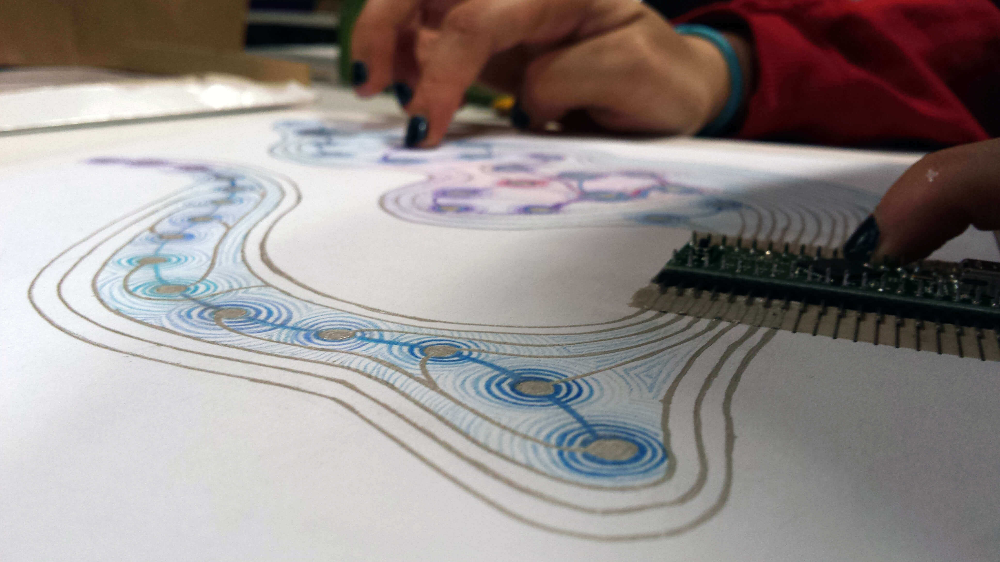

I produced these musical instruments as an extension to the Makey Makey under the Lifelong Kindergarten Group in the MIT Media Lab, under Eric Rosenbaum. This research project was aimed at creating hardware that could be used for instruments that people can cheaply make to learn music under an unconventional and entirely customized structure.
The Makey Makey is a really easy-to-use breakout board that allows users to connect ordinary objects, like bananas, to a circuit and use them as sensors to initiate keypresses and other inputs to computers. This research project was aimed to follow the Makey Makey's usability for people with no experience with circuits, but for a musical product that could be used as a teaching tool. Many instruments follow a similar structure where learning is shaped by practice and the study of music theory, but the instruments themselves do not offer affordances to beginners. This product would allow users to draw their own circuits to learn music in an unstructured way, enabling exploration and new learning opportunities. Our application of this product, developed with a TeensyDuino, solder and some software, created flexible soft-circuit programmable instruments extremely cheaply. These, unlike true instruments, are easy to make, affordable for all, and extremely customizable. Even from an accessibility standpoint, products like these that allow for custamizability can create a new space of tech for those with disabilities who traditional instruments do not accomodate, and those with learning disabilities who would benefit from a more custom experience.
8.5” x 11",
Paper, conductive paint, solder, pen, arduino,
2014
Musical Art Prototype from Kiran Wattamwar on Vimeo.
Musical Artwork from Kiran Wattamwar on Vimeo.
